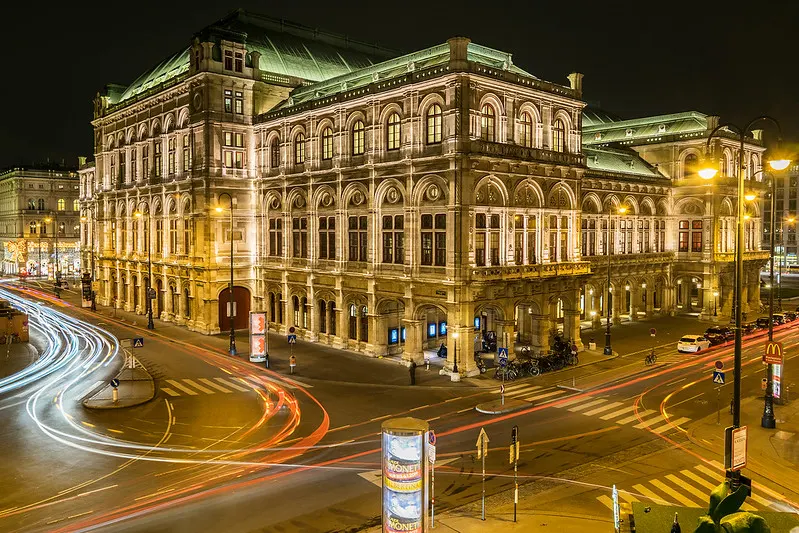
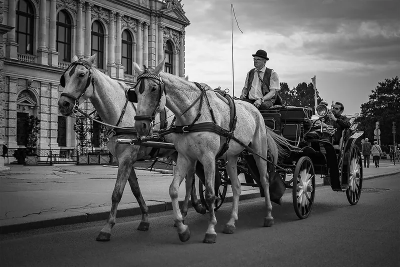
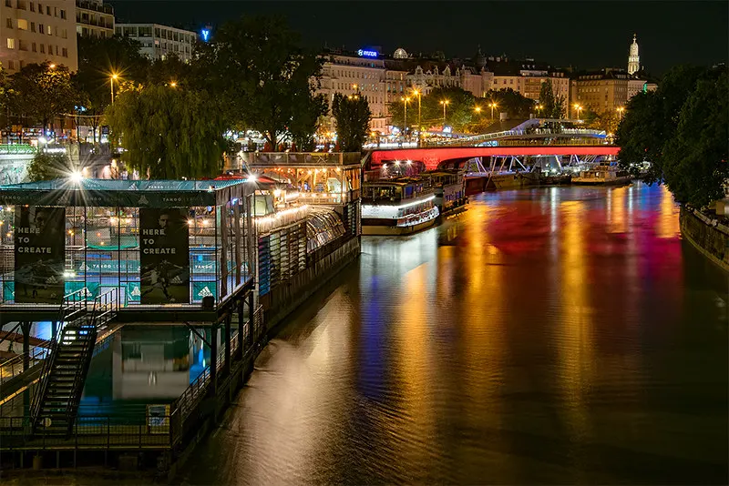

One of the greatest places to live on Earth.
Vienna is the capital, largest city, and one of nine provinces of Austria. Vienna is Austria's most populous city and its primate city, with about two million inhabitants (2.9 million within the metropolitan area, nearly one third of the country's population), and its cultural, economic, and political center. It is the 6th-largest city proper by population in the European Union and the largest of all cities on the Danube river.
-

Beautiful architecture
The Vienna State Opera is an opera house and opera company based in Vienna, Austria. The 1,709-seat Renaissance Revival venue was the first major building on the Vienna Ring Road. The opera house was inaugurated as the "Vienna Court Opera" (Wiener Hofoper) in the presence of Emperor Franz Joseph I and Empress Elisabeth of Austria.
-

Vienna Fiaker
A fiacre is a form of hackney coach, a horse-drawn four-wheeled carriage for hire. In Vienna such cabs are called Fiaker and still survive in Vienna and other European travel centres as tourist attractions.
-

Schwedenplatz
Schwedenplatz is located in Vienna's 1st district, Inner City, on the right bank of the Danube Canal and is one of the most important public transport hubs in Vienna. Schwedenbrücke and Schwedenplatz were given their current names in gratitude for Sweden's help after the First World War, which benefited the children of Vienna in particular.
Most livable city in the world
For the second year in a row, Vienna has been named the most livable city in the world. The Austrian capital earned the top spot on the Economist Intelligence Unit's (EIU) annual ranking because of its stability, its robust health care and education systems and its strong infrastructure, among other factors.